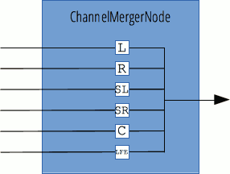

{{APIRef("Web Audio API")}}
The ChannelMergerNode interface, often used in conjunction with its opposite, {{domxref("ChannelSplitterNode")}}, reunites different mono inputs into a single output. Each input is used to fill a channel of the output. This is useful for accessing each channels separately, e.g. for performing channel mixing where gain must be separately controlled on each channel.

If ChannelMergerNode has one single output, but as many inputs as there are channels to merge; the number of inputs is defined as a parameter of its constructor and the call to {{domxref("BaseAudioContext/createChannelMerger", "AudioContext.createChannelMerger()")}}. In the case that no value is given, it will default to 6.
Using a ChannelMergerNode, it is possible to create outputs with more channels than the rendering hardware is able to process. In that case, when the signal is sent to the {{domxref("BaseAudioContext/listener", "AudioContext.listener")}} object, supernumerary channels will be ignored.
| Number of inputs | variable; default to 6. |
|---|---|
| Number of outputs | 1 |
| Channel count mode | "max" |
| Channel count | 2 (not used in the default count mode) |
| Channel interpretation | "speakers" |
ChannelMergerNode object instance.No specific property; inherits properties from its parent, {{domxref("AudioNode")}}.
No specific method; inherits methods from its parent, {{domxref("AudioNode")}}.
{{page("/en-US/docs/Web/API/AudioContext.createChannelMerger","Example")}}
{{Compat}}